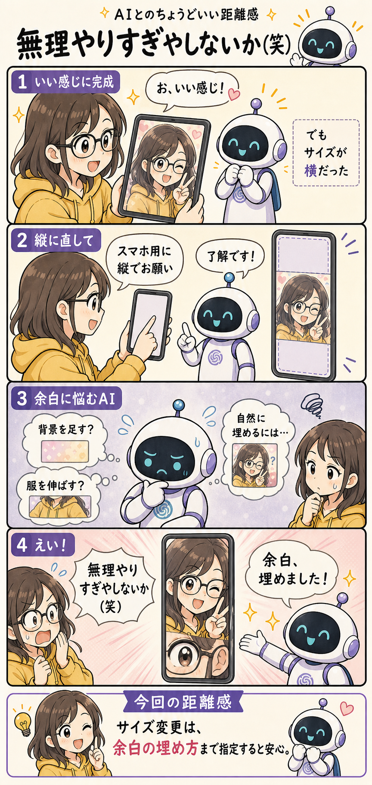
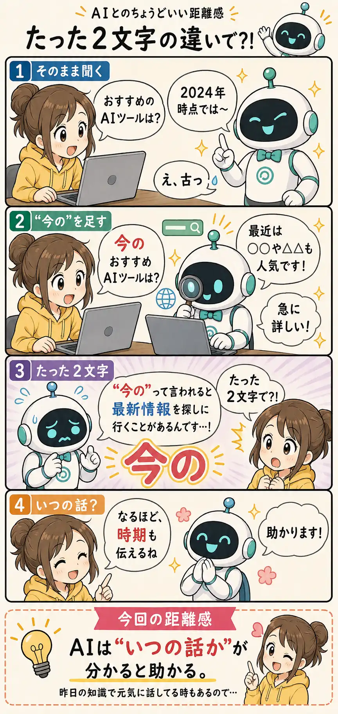

#100 SPECIAL
AI-distanceは、こうやって生まれた
100話まで作って分かった、AI漫画制作の面白さと難しさ。
AI-distanceは、こうやって生まれた
作者はもともと、長い文章だけを読んで何かを覚えるのがあまり得意ではありません。 「漫画みたいに短く、分かりやすく説明してくれたらいいのに」と昔から思っていました。
ただ、一昔前のChatGPTやGeminiで漫画を作ろうとすると、日本語の文字が崩れてしまうことが多く、なかなか思った形にはなりませんでした。
それがChatGPTのImage-gen2を使うようになって、かなり現実的になりました。 ちょうど仕事でも生成AIについて学ぶ機会が増えていた時期です。
そこで、「せっかく得た知識や実体験を、エンジニアではない人にも短く、分かりやすく伝えられないか」と考えて始めたのが、この「AIとのちょうどいい距離感」です。
ここまでの感想
この作品を作っている最中にも、「AIってすごいな」と何度も思いました。
一方で、本気で振り回された日もかなりあります（苦笑）。
実を言うと、100話すべてが「完璧！」と思って公開できたわけではありません。 むしろ毎回どこかで妥協しながら投稿しています。
AIには大きな可能性を感じます。 でも、一度うまくいったクオリティを次も同じように出し続けることが、想像以上に難しい。
ここからは、実際にどんなところで苦労してきたのかを紹介します。
キャラが違いすぎる（笑）
初期の作品と最近の作品を並べてみると、同じシリーズとは思えないくらいキャラクターが違います。
初期と現在を比べてみると……


さらに厄介なのが、「だいたい同じキャラ」になってからも、話によって微妙に画風が変わることでした。
同じ時期でも、よく見ると画風が違う


どうやって改善した？
一番安定したのは、過去にうまく生成できた画像をAIへ渡し、「このキャラクターと画風を参考にして」と頼む方法でした。
成功画像をAIに分析させ、その特徴を再現プロンプトとしてテンプレート化する方法も試しました。 こちらもかなり改善しましたが、それでも微妙に画風がズレることがあります。
ちなみに最初の頃は、キャラクターについて細かな指定をほとんどしていませんでした。 キャラクターも画風も、ほぼAIの気分次第です（笑）。
同じ4コマ内でも統一性がない
キャラクターを決めても安心はできません。
1コマ目ではメガネをかけていたのに、3コマ目と今回の距離感では突然なくなっている。
メガネどこ行った（笑）。

どうやって改善した？
そこで、画像を作るたびにキャラクターの統一ルールを明示するようになりました。
例えば、現在はこんな指示を入れています。
同じ1枚の漫画内では、
女性キャラクターとAIロボットを
同一キャラクターとして描く。
キャラクターの核は全コマで固定する。
表情、視線、手のポーズ、体の向きだけを変える。
女性キャラクターは、
顔立ち、髪型の基本、目の形、体格を変えない。
AIロボットは、
シルエット、顔画面、目の形、
アンテナ、耳パーツ、胸マークを変えない。
明示していない衣装変更をしない。
画風を途中で変えない。ここまで書いても絶対ではありません。 でも、何も指定しなかった頃と比べるとかなり安定しました。
吹き出しどっから出てるんだよ...
もう一つ苦労したのが吹き出しです。
本当は女性のセリフなのにAIロボットから吹き出しが出ていたり、その逆だったり。 心の声なのか、普通にしゃべっているのか分からないこともありました（汗）。

どうやって改善した？
4コマ構成や画像生成プロンプトを作る段階で、「誰の文字なのか」をなるべく細かく分けるようにしました。
「女性の吹き出し」「AIロボットの吹き出し」「女性の心の声」「背景に表示する文字」など、文字の役割まで指定します。
人間からすると当然に見える区別でも、AIには明示した方が安定することが多いようです。
何よりテーマ決めが大変！！
実は、一番大変なのは画像生成ではなく、毎回の「ネタ決め」かもしれません。
ChatGPTやClaudeにこれまでのバックナンバーを見せて、「次のテーマを考えて」と頼むこともあります。
でも、AIだけに任せると妙に真面目。 正しいけれど、漫画としてはあまり面白くない案が大量に出てくることがあります（苦笑）。
個人的には、案外Geminiの方が面白いネタを出してくれる時もあります。 とはいえ、どのAIでも、そのまま採用できることはほとんどありません。 以下は、敢えてOKとしたAI丸投げ回です。

最後は結局、「これなら自分でもクスッとするか？」を人間側で考えています。
自動化できるようでやり切れない
100話も作るなら、できるだけ自動化したくなります。 作者はシステムエンジニア・プログラマーなので、当然のように考えました。
Codexを使って、テーマ決めから記事作成、画像生成、サイト更新まで全自動に近づけようとしたこともあります。 AGENTS.mdやSKILLを用意して、工程もかなり細かく決めました。
ところが、ときどき工程を飛ばしたり、指示を無視したりします。 酷い時には既存画像を参照せず、そのまま画像を作り始めて作画が完全に別作品になったこともありました。
そして何より、全部任せるとやっぱりネタが真面目すぎる（笑）。
また、私の利用環境では画像を多く扱う作業をするとCodexの利用上限をかなり消費することがありました。 ChatGPT Plusの範囲で他の開発作業にもCodexを使いたいので、「ここでこんなに使うのはもったいないな……」とケチることもあります。
結果として現在は、完全自動化よりも「ChatGPTだけで、できるところまで作業を省力化する」という形に落ち着いています。
まとめ
今もなお四苦八苦しながら、「いつかもっと自動化できないかな」と考えています。
サイトの実装や更新作業そのものは、自分でやろうと思えばできます。
ただ、このシリーズの4コマ構成を毎回考え、漫画画像として形にする部分は完全にAIありきです。
なのでChatGPTから突然ハシゴを外されたら、この作品は普通に打ち切りになります（苦笑）。
そういう意味でも、この作品そのものが「AIとのちょうどいい距離感」を試し続けている実験なのかもしれません。
あとがき
改めて最初から振り返ってみると、作品だけでなく、作者自身のAIへの印象もかなり変わってきました。
最初は、「よく分からないけど、なんかすごい。でも、なんか抜けてる？」くらいの感覚でした。
今は、「この指示だとたぶん間違う」「こう書けばうまくいきやすい」という感覚が少しずつ分かってきました。
……と思った頃に、また予想外のことをして裏切ってくるやつでもあります（笑）。
AIそのものの賢さ以上に困るのが、サービス側の仕様や挙動が変わることです。 昨日まで読めていたプロンプト用のファイルを突然「読めません」と言われたり、今まで使えていた長さの画像生成プロンプトを「長すぎます」と言われたり。
「昨日できたじゃん！」と思うことは、今でもあります。
それでも、自分自身のAIとの向き合い方を記録するために。 自分のスキルを少しずつ上げていくために。 そして読んだ方に少しでも「あるある」「分かる（笑）」と思ってもらうために。
これからも、ぼちぼち続けていこうと思います。
ここまで読んでいただき、本当にありがとうございました。 引き続き「AIとのちょうどいい距離感」をよろしくお願いいたします。